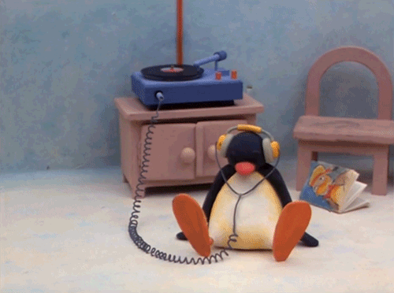
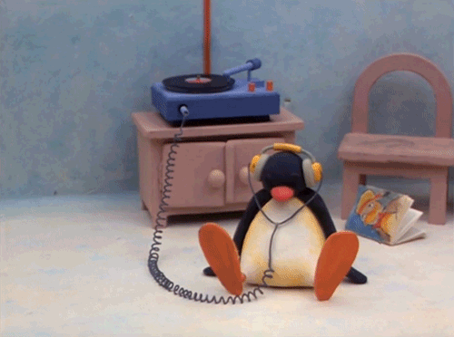
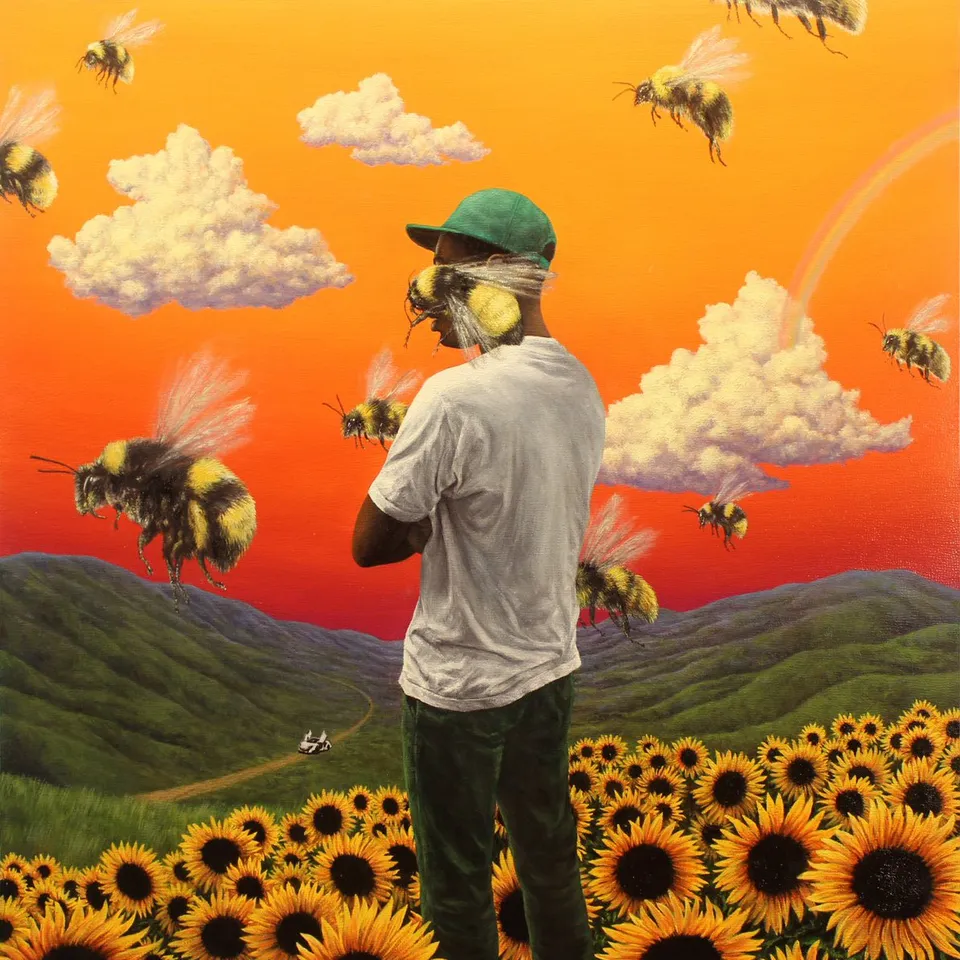
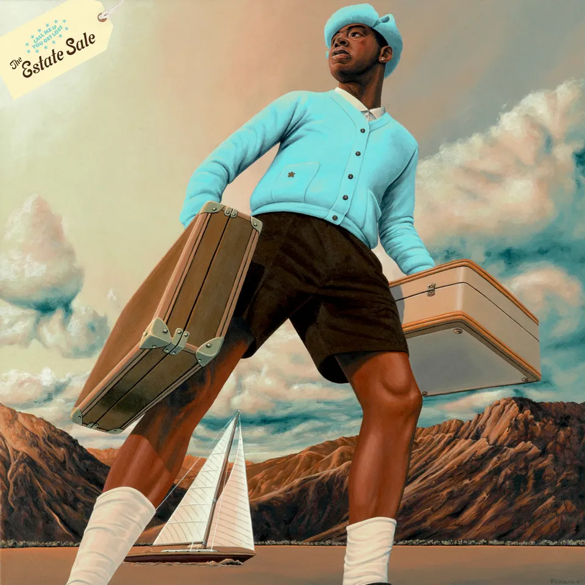

Hobby[2]-#Listening to music
#취미#음악#감상
 

전 음악을 듣는 것을 좋아합니다. 정확히 언제부터인지는 모르지만 꽤나 오래전, 중학생 때부터 좋아하게 된 것 같습니다. 어릴 때는 그냥 음악이란 걸 굳이 찾아듣지는 않았지만, 공부나 과제 중에 심심해서 듣는 정도였습니다.
처음은 멜론 top 100같은 노래들만 다운받아 가볍게 듣다가, 어느 순간 내가 좋아하는 장르는 무엇일까 찾고 싶어져 다양한 노래를 듣게 되면서 음악에 빠져들게 되었고, 결국 음악 감상이란 취미가 생겼습니다. 틈만 나면 새로운 장르의 음악이나 내가 좋게 들은 음악의 장르와 가수, 비슷한 음악에 대해 찾아보고 들어보게 되었습니다. 종종 음악을 틀어 놓고 할일을 처리하기도 하고, 긴 통학 시간을 즐겁게 만들어주는 좋은 취미입니다. 음악도 제 삶에서 떼어낼 수 없는 한 부분이 되었습니다.
좋아하는 장르 : Hiphop, R&B, pop, jazz, alternative rock, city pop...사실 웬만한 노래 다 듣습니다...
좋아하는 가수 : '리쌍(옛 최애), 'Tyler, The Creater'(현 최애)
좋아하는 앨범 : 'Tyler, The Creater'의 IGOR
좋아하는 곡 : 'Tyler, The Creater'의 RUNNING OUT OF TIME
추천하고 싶은 곡, 앨범, 가수 : 위에서 계속 말하는 타일러의 앨범은 다 추천하고 싶고,
외국 가수로는 The Weeknd, Childish Gambino, Steve Lacy, Dominic Fike, MF DOOM, Kanye West, Vaundy, Nujabes, Miguel, Lil Yachty, Ginger Root, kirinji 등등... 너무 많네요...,
한국 가수로는 롤러코스터, 클래지콰이, 코드쿤스트, Jclef, 리쌍, 에픽하이, 다듀, 원슈타인 등등... 추천합니다!
이 많은 가수들 중 추천하고 싶은 곡, 앨범을 뽑기가 정말 어려워서 포기... 다 들어보시고 취향에 맞는 인생곡 하나 얻어가셨으면 좋겠습니다!

